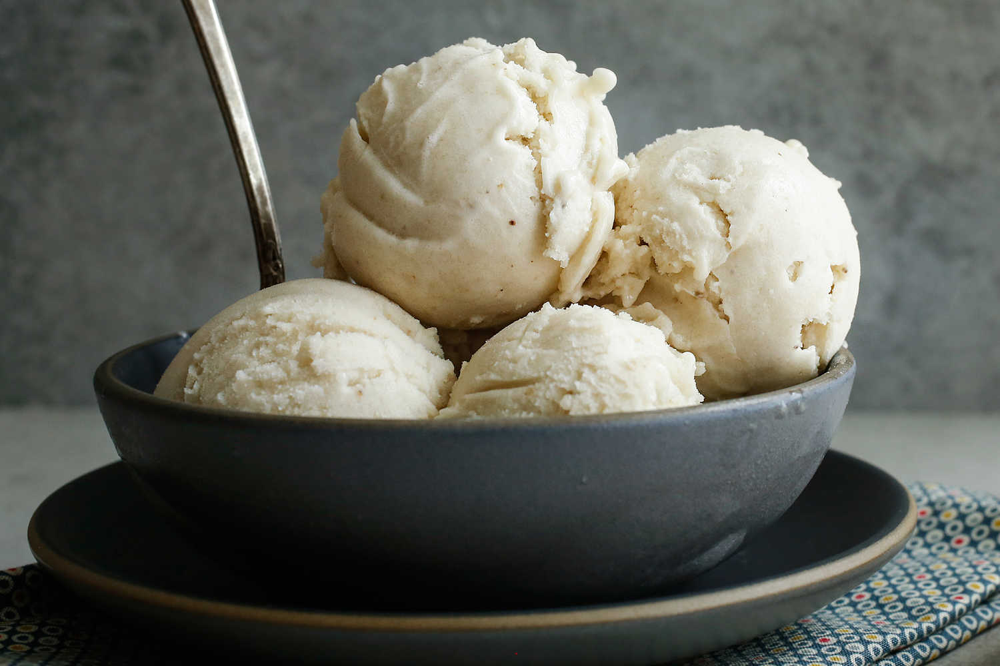

- Lunch Menu
-
Ravioli
Ravioli are a type of dumpling comprising a filling enveloped in thin pasta dough. -
Roast Sweetbread
is a culinary name for the thymus (also called throat, gullet, or neck sweetbread).
-

Scallops from the Isle of Skye
Scallops diver harvested from the cool clear waters of Loch Sligachan then supplied to most of the fine-dining restaurants and hotels on the Isle of Skye. -
Pressed foie grass
Foie gras is considered a luxury food product made of the liver of a duck or goose that has been especially fattened. -

Cured Sea Trout
Gin-cured sea trout with apple and fennel Prepare in advance if you have a party. -
Agnolotti
Agnolotti is a type of pasta typical of the Piedmont region of Italy, made with small pieces of flattened pasta dough, folded over a filling of roasted meat[1] or vegetables.
-

Cote de Porc
This is a contemporary version of a classic pork dish, côtelettes de porc charcutèrie. -
Cornish Skate
The attention to detail in every aspect is beyond what I thought was possible. As we were seated, the table across from us was being cleared from the previous and prepped for the next.
-

Walnut Whip
Ravioli are a type of dumpling comprising a filling enveloped in thin pasta dough. -
Custard Tart
is a culinary name for the thymus (also called throat, gullet, or neck sweetbread).
- BEVERAGES
-

Red Wine
Red wine is a type of wine made from dark-colored (black) grape varieties. -
White Sangría
Serve a signature cocktail, like white sangría, in mason jars with a grape garnish. -
Cotton Candy Cocktail
A simple cocktail that actually tastes like cotton candy! -
Bellini
A Bellini cocktail is a mixture of Prosecco sparkling wine and peach purée or nectar, which originated in Venice, Italy. -
Mimosa
Red wine is a type of wine made from dark-colored (black) grape varieties. -
Pink Lemonade
Adding raspberries to homemade lemonade gives it a tangy flavor and turns it a vivid pink - perfect for drinking in the sunshine. -
Sweet Tea
is a popular style of iced tea commonly consumed in the United States, but especially common in the Southern United States. -
Tiger Martini
Tiger-Tini cocktails, a nod to the couple's school, were passed out at this outdoor summer wedding.
-
Lynchburg Lemonade
Highlight local products like Lynchburg Lemonade in mason jars with a lemon slice garnish. - DESSERTS
-
CHOCOLATE AND AVOCADO MOUSSE
A surprisingly decadent pudding that is so much better for you than the egg-based classic. -
CHEESECAKE IN A JAM-JAR
Almost as naughty as a regular cheesecake, but the almonds in the base and the Greek yoghurt mixed into the topping mean that it’s a more nourishing version! -

BANANA ICE CREAM
It’s a one-ingredient, dairy-free, fat-free ice cream with no added sugar that you don’t need an ice cream machine to make. -
CARROT CAKE MACAROONS
These are the coconut macaroons of my childhood, updated to taste a lot like carrot cake but without all that butter icing. -
FROZEN BERRY BREAKFAST BOWL
Acai berries are one of the latest superfoods to reach our shores from South America and, among the many wondrous claims made of them, they are said to boost energy levels. -
PEANUT BUTTER AND RASPBERRY JAM PANCAKES
This is a simple gluten-free pancake recipe that provides lots of energy but won’t slow you down. -
CHRISTMAS BOMBE
With a surprise frozen creamy filling dotted with sweet festive ingredients, this is a great dessert for Christmas. -
CRANBERRY MINCE PIES
These cranberry mince pies are the perfect treat for after Christmas dinner, or as a late night snack with a glass of mulled wine.